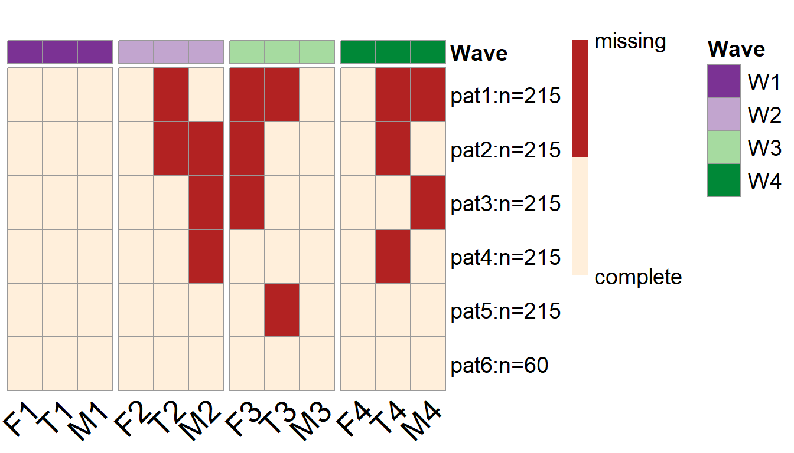

An example of PHPM with a second-order LGM
Yi Feng & Gregory R. Hancock
Second-Order-Latent-Growth-Model.RmdIn this vignette we supply an example showing how simPM can be used to search for an optimal PHPM design for a longitudinal research study that employs a second-order latent growth model (LGM).
Research Scenario
In this hypothetical example, a researcher (Mr. Y) is interested in studying the longitudinal trajectories of children’s externalizing behaviors. The researcher proposed to collect reports from the mother, the father, and the teacher about the child’s daily behaviors (from families with hetero-sexual parents). Once the data collection is completed, the researcher intends to model the externalizing behaviors as a latent variable and investigate its change over time.
Suppose the researcher has proposed a complete-case longitudinal study to collect data for 1,135 children across four waves, each collected at grades 1, 3, 4, and 5. The proposed analysis model is shown below, where the three indicators of the latent construct (externalizing behavior) \(\eta\) across each of the four waves are the responses from the mother (M1-M4), the father (F1-F4), and the teacher (T1-T4), correspondingly.
Although the researcher has initially obtained an external funding to support his longitudinal study, unfortunately, after the first wave of data collection, the funding agency announces a 30% reduction in the remaining funding. Mr. Y wishes to continue the project but he has to deal with the lowered budget constraint. Of course, Mr. Y also wants to keep the scientific rigor and satisfactory statistical power. He thus chooses to use simPM to find a design that yields sufficient power but costs no more than the reduced budget.

A second-order linear LGM
Spcify the Population and Analysis Model
simPM searches for an optimal design based on power analysis using Monte Carlo simulations. As such, we need to supply a population model and analysis model. The easiest way to specify the population model and analysis model is to use the lavaan model syntax. For this Second-order LGM example, the population model is specified as follows, assuming the researcher has obtained sufficient information from the literature to make an informed decision about the population model and the value of population parameters.
popModel='
#-----first-order latent factor loadings -----#
EXB1=~1.150*F1+0.836*T1+1*M1 # loadings invariant across time
EXB2=~1.150*F2+0.836*T2+1*M2
EXB3=~1.150*F3+0.836*T3+1*M3
EXB4=~1.150*F4+0.836*T4+1*M4
#-----second-order latent factor loadings -----#
interc=~1*EXB1+1*EXB2+1*EXB3+1*EXB4
slope=~0*EXB1+2*EXB2+3*EXB3+4*EXB4
#---- variance-covariance strucutre of second-order latent variables ----#
interc~~-0.244*slope
interc~~18.184*interc
slope~~0.249*slope
#---- mean structure ----#
interc~8.289*1
slope~-0.433*1
T1~-0.214*1 # invariant across time
T2~-0.214*1
T3~-0.214*1
T4~-0.214*1
M1~0*1 # fixed to 0
M2~0*1
M3~0*1
M4~0*1
F1~-1.136*1 # invariant across time
F2~-1.136*1
F3~-1.136*1
F4~-1.136*1
#---- residual variances and covariances ----#
EXB1~~1.084*EXB1
EXB2~~1.777*EXB2
EXB3~~1.457*EXB3
EXB4~~1.700*EXB4
M1~~23.886*M1
F1~~17.737*F1
T1~~55.074*T1
M2~~20.223*M2
F2~~8.941*F2
T2~~66.698*T2
M3~~16.905*M3
F3~~13.922*F3
T3~~61.995*T3
M4~~19.324*M4
F4~~13.410*F4
T4~~71.127*T4
F1~~4.256*F2+7.040*F3+5.737*F4
F2~~5.440*F3+3.590*F4
F3~~6.165*F4
T1~~23.603*T2+24.666*T3+23.168*T4
T2~~35.213*T3+29.648*T4
T3~~33.815*T4
M1~~12.975*M2+11.153*M3+11.683*M4
M2~~12.219*M3+11.332*M4
M3~~11.807*M4
'The analysis model is specified as the same second-order LGM but with freely estimated model parameters:
analyzeModel='
#-----first-order latent factor loadings -----#
EXB1=~NA*F1+a*F1+b*T1+1*M1 # loadings invariant across time
EXB2=~NA*F2+a*F2+b*T2+1*M2
EXB3=~NA*F3+a*F3+b*T3+1*M3
EXB4=~NA*F4+a*F4+b*T4+1*M4
#-----second-order latent factor loadings -----#
interc=~1*EXB1+1*EXB2+1*EXB3+1*EXB4
slope=~0*EXB1+2*EXB2+3*EXB3+4*EXB4
#---- variance-covariance strucutre of second-order latent variables ----#
interc~~slope
interc~~interc
slope~~slope
#---- mean structure ----#
interc~1
slope~1
F1~c*1 # invariant across time
F2~c*1
F3~c*1
F4~c*1
T1~d*1 # invariant across time
T2~d*1
T3~d*1
T4~d*1
M1~0*1 # fixed to 0
M2~0*1
M3~0*1
M4~0*1
#---- residual variances and covariances ----#
EXB1~~EXB1
EXB2~~EXB2
EXB3~~EXB3
EXB4~~EXB4
F1~~F1
F2~~F2
F3~~F3
F4~~F4
T1~~T1
T2~~T2
T3~~T3
T4~~T4
M1~~M1
M2~~M2
M3~~M3
M4~~M4
F1~~F2+F3+F4
F2~~F3+F4
F3~~F4
T1~~T2+T3+T4
T2~~T3+T4
T3~~T4
M1~~M2+M3+M4
M2~~M3+M4
M3~~M4
'Wave-level PHPM Designs
1. Search for an Optimal Wave-level Design
We can use the main function simPM() to search for an optimal wave-level missing design. For simPM() to work properly, we need to supply the relevant information about this longitudinal study. By running the following code, simPM will automatically map out all the possible wave-level PHPM designs, run power analysis for each plausible design, and output the optimal design.
wave.ex2 <- simPM(popModel = popModel, #supply the population model using lavaan syntax
analyzeModel = analyzeModel, #supply the analysis model using lavaan syntax
VarNAMES = c("F1","T1","M1","F2","T2","M2",
"F3","T3","M3","F4","T4","M4"), #the observed variable names, grouped in waves, in chronological order
Time = 4, #total number of waves
Time.complete = 1, #number of waves completed before funding cut occurs
k = 3, #number of observed variables collected at each wave
pc = 0.1, #percentage of participants to provide complete data after funding cut
pd = 0, #percentage of participants to provide no data after funding cut
costmx = c(rep(5,3), rep(10,3), rep(15,3)), #unit cost of each data point at the following waves
n = 1135, #original sample size
nreps = 1000, #number of replications for Monte Carlo simulation
focal.param = c("interc~1",
"slope~1",
"interc~~interc",
"slope~~slope"), #specify the focal parameters, using lavaan syntax
complete.wave = NULL, #specify any future wave that need complete data to be collected
eval.budget = T, #whether or not there is a budget restriction
rm.budget = 90*1135*0.7, #the amount of remaining budget
distal.var = NULL, #specify any distal variables that are not subject to PM
seed = 12345, #random seed
engine = "l", #use lavaan and simsem to fit the models
methods = "wave" #type of PHPM designs under consideration, "wave" indicates wave-level missing
)A more detailed explaination of the arguments is offered below:
-
VarNAMES = c("F1","T1","M1","F2","T2","M2","F3","T3","M3","F4","T4","M4"): The observed variables collected in this study are named F1-F4 for fathers’ report, T1-T4 for teachers’ report, and M1-M4 for mothers’ report from wave 1 to wave 4. -
Time = 4: The study has 4 waves of data collection in total. -
Time.complete = 1: One wave of data collection has been completed before funding cut occurs. -
k = 3: Three observed variable are collected at each wave of data collection. -
pc = 0.1: Ten percent of the participants are randomly assigned to provide complete data for future waves after funding cut. -
pd = 0: Zero percent of the participants are assigned to drop from the study. -
costmx = c(rep(5,3), rep(10,3), rep(15,3)): The unit cost of collecting one report from the father, the mother, or the teacher is $5 at wave 2, $10 at wave 3, and $15 at wave 4.
-
n = 1135: The original sample size that the researcher has had planned was 1,135. -
nreps = 1000: The program will run 1000 replications for Monte Carlo simulations (to assess the empirical power under each plausible design). -
focal.param = c("interc~1", "slope~1", "interc~~interc", "slope~~slope"): The focal parameters of interest are the mean and variance of the latent intercepts and latent slopes for the latent construct of externalizing behaviors. -
complete.wave = NULL: All of the future waves are subject to planned missingness. No future waves are by design to have complete data colleted from all of the participants. -
eval.budget = T: Yes, there is a budget restriction that needs to be taken into consideration. -
rm.budget = 90*1135*0.7: After the funding cut, the researcher will have \(\$71,505\) \((=90\times1135\times0.7)\) to support the future waves of data collection. -
distal.var = NULL: There are no time-invarying distal variables in the model that are not subject to repeated measures. -
engine = "l": Data were simulated usingsimsemand the models were fitted usinglavaan. -
methods = "wave": Search for wave-level missing designs.
2. Summarize the Result
To view a summary of the results, we can use the summary() function. It prints out the comparison among all the plausible wave-level missing designs (the comparison is made with regard to the focal parameter who has the lowest empirical power). The function will also print the optimal design that was selected, the details about the focal parameters for the selected optimal design, the missing data pattern for the selected optimal PHPM design, and the proportion as well as the number of participants assigned to each unqie missing data pattern.
For this example, there is only one possible wave-level PHPM design given the budget constraints. Therefore, the program has run simulations only for this one possible design. This design costs $40,950, which is below the reduced available budget.
[1] "=================results summary================"
convergence.rate weakest.param.name weakest.para.power cost.design miss.waves
1 0.702 slope~~slope 0.421 40950 2
[1] "=================Optimal design================="
convergence.rate weakest.param.name weakest.para.power cost.design miss.waves
1 0.702 slope~~slope 0.421 40950 2With this design, 10% of the participants (\(n=115\)) are assigned to provide complete data across all the future waves of data collection. The rest 90% of the participants are randomly assigned to one of the three unique missing data patterns (\(n=340\) in each pattern).
[1] "=================Optimal patterns==============="
F1 T1 M1 F2 T2 M2 F3 T3 M3 F4 T4 M4
0 0 0 1 1 1 1 1 1 0 0 0
0 0 0 1 1 1 0 0 0 1 1 1
0 0 0 0 0 0 1 1 1 1 1 1
completers 0 0 0 0 0 0 0 0 0 0 0 0
[1] "=================Optimal probs=================="
[1] 0.3 0.3 0.3 0.1
[1] "=================Optimal ns===================="
[1] 340 340 340 115Over 1000 replications, this design yields an empirical power of 1 for testing the mean intercept (\(\mu_\alpha\)), the mean slope (\(\mu_\beta\)), and the intercept variance (\(\sigma^2_\alpha\)). The statistical power, however, for testing the slope variance \(\sigma^2_\beta\) is only 0.421.
[1] "=================Optimal design for focal parameters================="
Estimate Average Estimate SD Average SE Power (Not equal 0) Std Est Std Est SD
interc~1 8.2922999 0.18439790 0.18532638 1.000 1.948990 1.108139e-01
slope~1 -0.4349477 0.03524265 0.03648627 1.000 -1.055051 1.095330e+00
interc~~interc 18.2591912 1.98317441 2.01371609 1.000 1.000000 1.507552e-16
slope~~slope 0.2514950 0.14609108 0.14303930 0.421 1.000000 1.400756e-16
Std Ave SE Average FMI1 SD FMI1
interc~1 0.1131175 0.05958998 0.01523916
slope~1 7.7855138 0.33198048 0.02445560
interc~~interc 0.0000000 0.40317214 0.03075357
slope~~slope 0.0000000 0.80321992 0.01634524To view more details of the optimal PHPM design, we can use the following code, which will print out the detailed model fitting results over the replications.
3. Visualize the Optimal Design
To visualize the missing data patterns of the optimal PHPM design, we can use the plotPM() function. It will plot the missing data pattern matrix so people can have a more intuitive understanding of the optimal design that was selected. In this plot, each row represents a unique missing data pattern. Each column represents an observed variable. The number of participants assigned to each missing data pattern is also labeled.
In this example, we can see that 115 participants are assigned to provide complete data over the future waves of data collection, while the rest of the participants are assigned to one of the three missing data patterns. For instance, three hundred and fourty participants are randomly picked to NOT provide data in wave 2 and wave 3 (the first row of the plot); Another 340 participants are randomly picked to NOT provide data in wave 2 and wave 4 (the second row of the plot).

Balanced Item-level PHPM Designs
Given that the wave-level missing designs, Mr. Y may want to consider other possible types of designs–e.g., item-level PM designs.
1. Search for an Optimal Item-level Design
The function simPM() can also be used to search for an optimal item-level missing design. The code to search for optimal item-level PHPM designs is very similar to the code used to search for optimal wave-level PHPM designs. The minor differences in the code are highlighted with comments.
item.ex2 <- simPM(
popModel,
analyzeModel,
VarNAMES = c("F1","T1","M1","F2","T2","M2",
"F3","T3","M3","F4","T4","M4"),
distal.var = NULL,
n = 1135,
nreps = 1000,
seed = 12345,
Time = 4,
k = 3,
Time.complete = 1,
costmx = c(5,5,5,10,10,10,15,15,15),
pc = 0.1,
pd = 0,
focal.param = c("interc~1",
"slope~1",
"interc~~interc",
"slope~~slope"),
eval.budget = T,
rm.budget = 90*1135*0.7,
complete.var = NULL, # specify any observed variables (items) that need complete data to be collected in the future waves
engine = "l",
methods = "item" # type of PHPM designs under consideration, "item" indicates item-level missing
)While most of the arguments remain the same as in the case of wave-level missing designs, there are two arguments that are slightly different in the context of item-level missing designs:
-
complete.var = NULL: No observed variables (items) are by design to have complete data colleted from all participants in the future waves of data collection. -
methods = "item": Search for item-level missing designs.
2. Summarize the Result
To view a summary of the results, we can use the summary.simpm() function.
For this example, given the budget constraints, there are five plausible item-level PHPM designs (with missingness balanced across the patterns). The program thus has run simulations for all the five plausible designs and made comparisons across the designs. The optimal design among the 5 balanced item-level missing designs will cost $61,830, which is below the reduced available budget.
[1] "=================results summary================"
convergence.rate weakest.param.name weakest.para.power cost.design miss.point
1 0.891 slope~~slope 0.790 61830 4
2 0.857 slope~~slope 0.668 51750 5
3 0.767 slope~~slope 0.543 41670 6
4 0.702 slope~~slope 0.403 31590 7
5 0.566 slope~~slope 0.306 20790 8
[1] "=================Optimal design================="
convergence.rate weakest.param.name weakest.para.power cost.design miss.point
1 0.891 slope~~slope 0.79 61830 4With this design, 10% of the participants are assigned to provide complete data across all the future waves of data collection. The rest 90% of the participants are randomly assigned to one of the 126 unique missing data patterns (\(n=8\) in each pattern). In each pattern, the participants are assigned to miss four observed indicators (items) in the future waves of data collection.
[1] "=================Optimal patterns==============="
F1 T1 M1 F2 T2 M2 F3 T3 M3 F4 T4 M4
0 0 0 1 1 1 1 0 0 0 0 0
0 0 0 1 1 1 0 1 0 0 0 0
0 0 0 1 1 1 0 0 1 0 0 0
0 0 0 1 1 1 0 0 0 1 0 0
0 0 0 1 1 1 0 0 0 0 1 0
0 0 0 1 1 1 0 0 0 0 0 1
0 0 0 1 1 0 1 1 0 0 0 0
0 0 0 1 1 0 1 0 1 0 0 0
0 0 0 1 1 0 1 0 0 1 0 0
0 0 0 1 1 0 1 0 0 0 1 0
0 0 0 1 1 0 1 0 0 0 0 1
0 0 0 1 1 0 0 1 1 0 0 0
0 0 0 1 1 0 0 1 0 1 0 0
0 0 0 1 1 0 0 1 0 0 1 0
0 0 0 1 1 0 0 1 0 0 0 1
0 0 0 1 1 0 0 0 1 1 0 0
0 0 0 1 1 0 0 0 1 0 1 0
0 0 0 1 1 0 0 0 1 0 0 1
0 0 0 1 1 0 0 0 0 1 1 0
0 0 0 1 1 0 0 0 0 1 0 1
0 0 0 1 1 0 0 0 0 0 1 1
0 0 0 1 0 1 1 1 0 0 0 0
0 0 0 1 0 1 1 0 1 0 0 0
0 0 0 1 0 1 1 0 0 1 0 0
0 0 0 1 0 1 1 0 0 0 1 0
0 0 0 1 0 1 1 0 0 0 0 1
0 0 0 1 0 1 0 1 1 0 0 0
0 0 0 1 0 1 0 1 0 1 0 0
0 0 0 1 0 1 0 1 0 0 1 0
0 0 0 1 0 1 0 1 0 0 0 1
0 0 0 1 0 1 0 0 1 1 0 0
0 0 0 1 0 1 0 0 1 0 1 0
0 0 0 1 0 1 0 0 1 0 0 1
0 0 0 1 0 1 0 0 0 1 1 0
0 0 0 1 0 1 0 0 0 1 0 1
0 0 0 1 0 1 0 0 0 0 1 1
0 0 0 1 0 0 1 1 1 0 0 0
0 0 0 1 0 0 1 1 0 1 0 0
0 0 0 1 0 0 1 1 0 0 1 0
0 0 0 1 0 0 1 1 0 0 0 1
0 0 0 1 0 0 1 0 1 1 0 0
0 0 0 1 0 0 1 0 1 0 1 0
0 0 0 1 0 0 1 0 1 0 0 1
0 0 0 1 0 0 1 0 0 1 1 0
0 0 0 1 0 0 1 0 0 1 0 1
0 0 0 1 0 0 1 0 0 0 1 1
0 0 0 1 0 0 0 1 1 1 0 0
0 0 0 1 0 0 0 1 1 0 1 0
0 0 0 1 0 0 0 1 1 0 0 1
0 0 0 1 0 0 0 1 0 1 1 0
0 0 0 1 0 0 0 1 0 1 0 1
0 0 0 1 0 0 0 1 0 0 1 1
0 0 0 1 0 0 0 0 1 1 1 0
0 0 0 1 0 0 0 0 1 1 0 1
0 0 0 1 0 0 0 0 1 0 1 1
0 0 0 1 0 0 0 0 0 1 1 1
0 0 0 0 1 1 1 1 0 0 0 0
0 0 0 0 1 1 1 0 1 0 0 0
0 0 0 0 1 1 1 0 0 1 0 0
0 0 0 0 1 1 1 0 0 0 1 0
0 0 0 0 1 1 1 0 0 0 0 1
0 0 0 0 1 1 0 1 1 0 0 0
0 0 0 0 1 1 0 1 0 1 0 0
0 0 0 0 1 1 0 1 0 0 1 0
0 0 0 0 1 1 0 1 0 0 0 1
0 0 0 0 1 1 0 0 1 1 0 0
0 0 0 0 1 1 0 0 1 0 1 0
0 0 0 0 1 1 0 0 1 0 0 1
0 0 0 0 1 1 0 0 0 1 1 0
0 0 0 0 1 1 0 0 0 1 0 1
0 0 0 0 1 1 0 0 0 0 1 1
0 0 0 0 1 0 1 1 1 0 0 0
0 0 0 0 1 0 1 1 0 1 0 0
0 0 0 0 1 0 1 1 0 0 1 0
0 0 0 0 1 0 1 1 0 0 0 1
0 0 0 0 1 0 1 0 1 1 0 0
0 0 0 0 1 0 1 0 1 0 1 0
0 0 0 0 1 0 1 0 1 0 0 1
0 0 0 0 1 0 1 0 0 1 1 0
0 0 0 0 1 0 1 0 0 1 0 1
0 0 0 0 1 0 1 0 0 0 1 1
0 0 0 0 1 0 0 1 1 1 0 0
0 0 0 0 1 0 0 1 1 0 1 0
[ reached getOption("max.print") -- omitted 44 rows ]
[1] "=================Optimal probs=================="
[1] 0.007143 0.007143 0.007143 0.007143 0.007143 0.007143 0.007143 0.007143 0.007143 0.007143 0.007143
[12] 0.007143 0.007143 0.007143 0.007143 0.007143 0.007143 0.007143 0.007143 0.007143 0.007143 0.007143
[23] 0.007143 0.007143 0.007143 0.007143 0.007143 0.007143 0.007143 0.007143 0.007143 0.007143 0.007143
[34] 0.007143 0.007143 0.007143 0.007143 0.007143 0.007143 0.007143 0.007143 0.007143 0.007143 0.007143
[45] 0.007143 0.007143 0.007143 0.007143 0.007143 0.007143 0.007143 0.007143 0.007143 0.007143 0.007143
[56] 0.007143 0.007143 0.007143 0.007143 0.007143 0.007143 0.007143 0.007143 0.007143 0.007143 0.007143
[67] 0.007143 0.007143 0.007143 0.007143 0.007143 0.007143 0.007143 0.007143 0.007143 0.007143 0.007143
[78] 0.007143 0.007143 0.007143 0.007143 0.007143 0.007143 0.007143 0.007143 0.007143 0.007143 0.007143
[89] 0.007143 0.007143 0.007143 0.007143 0.007143 0.007143 0.007143 0.007143 0.007143 0.007143 0.007143
[100] 0.007143 0.007143 0.007143 0.007143 0.007143 0.007143 0.007143 0.007143 0.007143 0.007143 0.007143
[111] 0.007143 0.007143 0.007143 0.007143 0.007143 0.007143 0.007143 0.007143 0.007143 0.007143 0.007143
[122] 0.007143 0.007143 0.007143 0.007143 0.007143 0.100000
[1] "=================Optimal ns===================="
[1] 8 8 8 8 8 8 8 8 8 8 8 8 8 8 8 8 8 8 8 8 8 8 8 8 8
[26] 8 8 8 8 8 8 8 8 8 8 8 8 8 8 8 8 8 8 8 8 8 8 8 8 8
[51] 8 8 8 8 8 8 8 8 8 8 8 8 8 8 8 8 8 8 8 8 8 8 8 8 8
[76] 8 8 8 8 8 8 8 8 8 8 8 8 8 8 8 8 8 8 8 8 8 8 8 8 8
[101] 8 8 8 8 8 8 8 8 8 8 8 8 8 8 8 8 8 8 8 8 8 8 8 8 8
[126] 8 127Over 1000 replications, this design yields an empirical power of 1 for testing the mean intercept (\(\mu_\alpha\)), the mean slope (\(\mu_\beta\)), and the intercept variance (\(\sigma^2_\alpha\)). The empirical statistical power for testing the slope variance \(\sigma^2_\beta\) is 0.79.
[1] "=================Optimal design for focal parameters================="
Estimate Average Estimate SD Average SE Power (Not equal 0) Std Est Std Est SD
interc~1 8.2953189 0.18356640 0.18382632 1.00 1.9474106 9.968931e-02
slope~1 -0.4340963 0.03309627 0.03297006 1.00 -0.9299426 2.574645e-01
interc~~interc 18.2697160 1.77895530 1.75026092 1.00 1.0000000 1.529087e-16
slope~~slope 0.2495351 0.09254388 0.09116761 0.79 1.0000000 1.408373e-16
Std Ave SE Average FMI1 SD FMI1
interc~1 0.09904717 0.03719561 0.005633355
slope~1 0.25572528 0.17422814 0.021089960
interc~~interc 0.00000000 0.20426534 0.022736031
slope~~slope 0.00000000 0.51588859 0.019591327To view more details of the optimal PHPM design, we can use the following code, which will print out more detailed information of the simulation results for the optimal PHPM design.
3. Visualize the Optimal Design
Similarly, to visualize the missing data patterns of the optimal PHPM design, we can use the plotPM() function. As shown in the plot, 90% of the participants are randomly assigned to one of the 126 unique missing data patterns. For each missing data pattern, the participants will have missing data by design on four of the observed variables (indicators/items). For example, if a participant is assigned to the first missing data pattern (first row), the researcher will not collect data from the father, mother, nor the teacher at wave 2; at wave 3, the researcher will only collect data from the mother and the teacher, but not the father.

Item-level PHPM Designs via Forward Assembly
The optimal balanced item-level PHPM designs yields satisfactory power for testing the focal parameters. But with an excessive number of missing data patterns, it is hard to implement such a design in practice. Therefore, we could consider another searching strategy for item-level PHPM designs–the forward assembly.
1. Search for an Optimal Item-level Design via Forward Assembly
We can also use the function simPM() to search for an optimal item-level missing design via forward assembly. We only need to change a few arguments within the simPM() function in order to implement forward assembly.
forward.ex2 <- simPM(
analyzeModel = analyzeModel,
popModel = popModel,
VarNAMES = c("F1","T1","M1","F2","T2","M2",
"F3","T3","M3","F4","T4","M4"),
distal.var = NULL,
n = 1135,
nreps = 1000,
seed = 123321,
Time = 4,
k = 3,
Time.complete = 1,
costmx = c(rep(5,3),rep(10,3),rep(15,3)),
pc = 0.05,
pd = 0,
focal.param = c("interc~1",
"slope~1",
"interc~~interc",
"slope~~slope"),
max.mk = 5, #maximum number of unique missing data patterns allowed in the design
eval.budget = T,
rm.budget = 1135*(15+30+45)*0.7,
complete.var = "M3", #assume the researcher wants to collect complete data from the mothers at wave 3
engine = "l",
methods = "forward" #type of PHPM designs under consideration, "forward" indicates imbalanced item-level PM designs searched via forward assembly.
)While most of the arguments remains the same as in balanced item-level PHPM designs, here are a few arguments that are different and thus we offer a brief summary below:
-
max.mk = 5: In this example, the researcher would want to consider the PM designs with no more than 5 unique missing data patterns. -
methods = "forward": Search for item-level missing designs via forward assembly.
2. Summarize the Result
Similarly, to view a summary of the results, we can use the summary.simpm() function.
According to the output, the optimal design costs $69,802.5, which is below the reduced available budget.
[1] "=================Optimal design================="
convergence.rate weakest.param.name weakest.para.power cost.design miss.num miss.var1 miss.var2
48 0.93 slope~~slope 0.94 69802.5 5 T2 F3
miss.var3 miss.var4 miss.var5 sim.seq miss.loc1 miss.loc2 miss.loc3 miss.loc4 miss.loc5
48 T3 T4 M4 48 5 7 8 11 12With this design, 5% of the participants are assigned to provide complete data across all the future waves of data collection. The rest 95% of the participants are randomly assigned to one of the five unique missing data patterns (\(n=215\) in each pattern).
[1] "=================Optimal patterns==============="
F1 T1 M1 F2 T2 M2 F3 T3 M3 F4 T4 M4
0 0 0 0 1 0 1 1 0 0 1 1
0 0 0 0 1 1 1 0 0 0 1 0
0 0 0 0 0 1 1 0 0 0 0 1
0 0 0 0 0 1 0 0 0 0 1 0
0 0 0 0 0 0 0 1 0 0 0 0
completers 0 0 0 0 0 0 0 0 0 0 0 0
[1] "=================Optimal probs=================="
[1] 0.19 0.19 0.19 0.19 0.19 0.05
[1] "=================Optimal ns===================="
[1] 215 215 215 215 215 60Over 1000 replications, this design yields an empirical power of 0.94 for testing the slope variance \(\sigma^2_\beta\), and 1 for testing the mean intercept (\(\mu_\alpha\)), the mean slope (\(\mu_\beta\)), and the intercept variance (\(\sigma^2_\alpha\)).
[1] "=================Optimal design for focal parameters================="
Estimate Average Estimate SD Average SE Power (Not equal 0) Std Est Std Est SD Std Ave SE Average FMI1 SD FMI1
interc~1 8.2865724 0.18423599 0.18257516 1.00 1.9443858 9.325732e-02 0.09379636 0.02365522 0.006379778
slope~1 -0.4329607 0.03256262 0.03172940 1.00 -0.9003786 2.070116e-01 0.18404313 0.10842323 0.019047938
interc~~interc 18.2731813 1.68107536 1.66210528 1.00 1.0000000 1.554693e-16 0.00000000 0.11784586 0.021024875
slope~~slope 0.2502644 0.07226992 0.07443478 0.94 1.0000000 1.438019e-16 0.00000000 0.27518386 0.024379875To view more details of the optimal PHPM design, we can use the following code, which will print out the detailed model fitting results over the replications.
3. Visualize the Optimal Design
Similarly, to visualize the missing data patterns of the optimal PHPM design, we can use the plotPM() function. As shown in the plot, …
